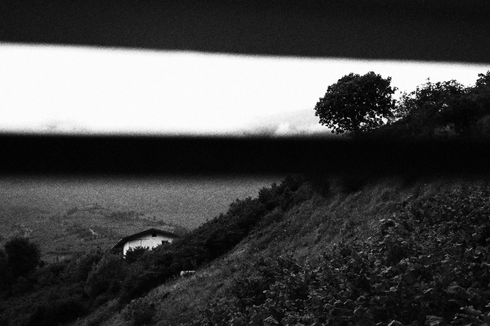

۲۷ دی ۱۴۰۴ • نیمهشب
POETRY & REFLECTION
غروب را نتوان، مرگ آفتاب انگاشت
در باد روان شدم؛ چه شوری برای تماشا داشتم
«در باد روان شدم.
چه شوری برای تماشا داشتم.
اگر یک روز طلوع و غروب آفتاب را نمیدیدم گناهکار بودم.»
اولین روز هفته بود، شنبه بیست و هفتم دیماه. گاهی در میان خستگیِ کشیکها و شتاب بیامان روزگار، ایستادن در برابر یک غروبِ آرام به ما یادآوری میکند که تاریکی پایانِ راه نیست؛ بلکه مکثی است برای دیده شدنِ ستارهها و مقدمهای برای طلوعی دوباره در سحرگاه.